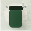
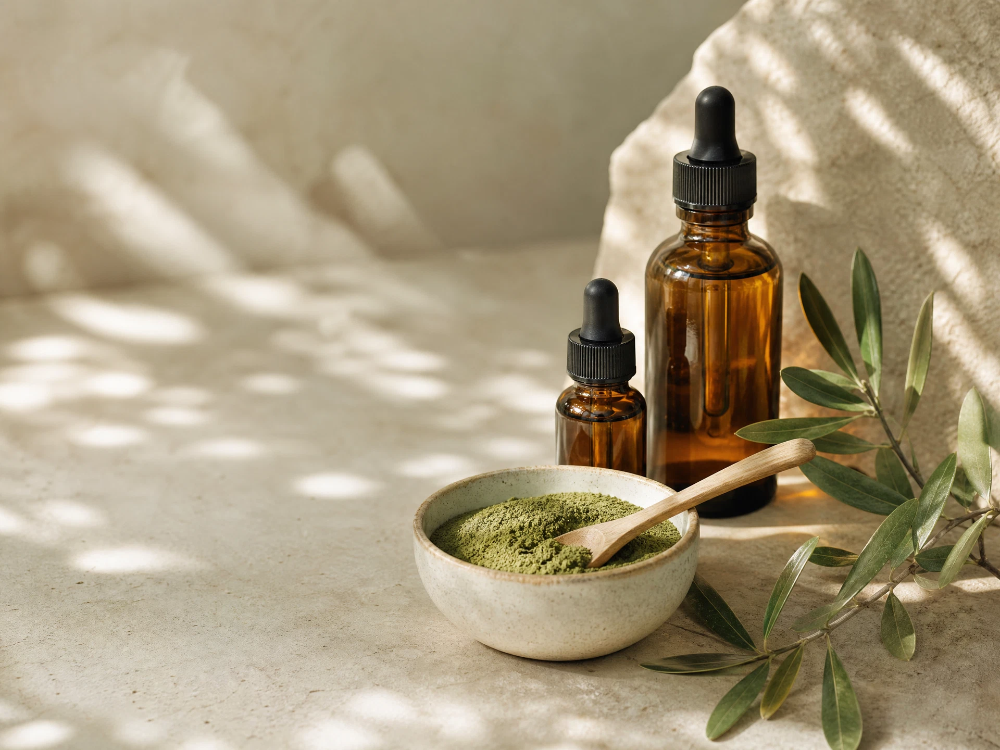

How to make the five quiet minutes before bed count
A low-pressure way to turn an ordinary evening routine into a small personal pause.
Read the noteIngredient-led care
Essential textures and considered formulas for the way you want your skin to feel — today, and every day after.

Veloura Ritual No. 01
Our categories
The Veloura approach
A collection built around the small repeatable acts that make care feel like yours.
Each step has a purpose. Each formula leaves room for the next one.
Our philosophy
“The most considered rituals leave more room for you.”
Veloura keeps the collection focused: well-considered layers, clear ingredient stories, and sensorial textures that turn regular care into a return to yourself.
Shop the collection
Move through the collection by texture, need, or simply what calls to you today.
From the journal
A low-pressure way to turn an ordinary evening routine into a small personal pause.
Read the note
Ingredient StudyWhy texture, transparency, and a smaller collection can make your daily ritual feel clearer.
Read the noteMeet every stage of a routine with the kind of attention it deserves.
Read the noteA closer look at the slow transformation that makes cleansing feel less like a task.
Read the noteA quiet way to approach the ingredient list, the order of a routine, and your own needs.
Read the noteA tactile study of glass, greenery, and the pleasure of keeping only what earns its place.
Read the noteA little clarity
Our most useful answers, kept in one calm place.
Begin with the textures you enjoy using regularly: a cleanser, one treatment or serum, and a moisturiser. Veloura product pages make the suggested order clear, while your skin’s own response should remain the guide.
TODO — replace with the real answer from the live site.
TODO — replace with the real answer from the live site.
TODO — replace with the real answer from the live site.
From our shelf
A closer look at the pace, texture, and quiet study behind Veloura.